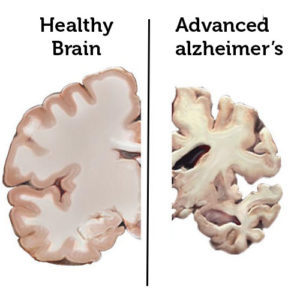

Types of dementia
Alzheimer’s disease
 Alzheimer’s disease is the most common cause of dementia affecting up to 70% of all people with dementia. Abnormalities in nerve cells within the brain (referred to as amyloid plaques and neurofibrillary tangles) impair synapses so signals cannot pass between brain cells. Eventually these plaques and tangles kill brain cells by preventing the normal transport of food and energy around the cell. Alzheimer’s disease results in impaired memory, thinking and behaviour. Alzheimer’s disease has a shrinking effect on the brain.
Multi-infarct dementia
This is the broad term for dementia associated with limited blood circulation to the brain, often caused by strokes (clots or bleeds). The strokes often damage the cortex of the brain – the area associated with learning, memory and language. It is the second most common cause of dementia after Alzheimer’s disease.
Lewy body disease
Lewy bodies is a common form of dementia caused by abnormal structures in the brain. Symptoms include noticeable changes in mood with episodes of confusion followed by greater clarity, and distressing visual experiences including visual and auditory hallucinations.
Korsakov Syndrome
This is a form of dementia often associated with the excessive drinking of alcohol. This syndrome affects short-term memory, learning and other mental functions. Korsakoff’s syndrome and Wernicke-Korsakoff syndrome are particular forms of alcohol-related brain injury, which cause alcohol-related dementia.
Frontotemporal Lobar Degeneration including Pick’s disease
Frontotemporal Lobar Degeneration (FTLD) is caused by a degeneration occurring in frontal and/or temporal lobes of the brain. When the frontal lobes are affected first, the main changes are in personality and behaviour. When the temporal lobes are affected first, there is a loss of language skills.
Huntington’s disease
This is an inherited disease causing abnormal movements and problems with coordination. Dementia can occur at any stage of the illness. Symptoms include a progressive deterioration of memory, speed of thought, judgement, awareness, planning and the introduction of obsessive behaviour. This form of dementia differs from Alzheimer’s disease in that those affected continue to recognise people and places until the very late stages of the illness.
Parkinson’s disease
This is a disorder of the nervous system. Some people with Parkinson’s disease develop dementia. Symptoms include forgetfulness, slow thought processes, difficulty concentrating, lack of motivation, anxiety, depression and irritability, visual hallucinations and delusions.
Younger onset dementia
This is the term used to describe any form of dementia diagnosed in people under the age of 65. Symptoms can include loss of memory, intellect, rationality, social skills and normal emotional reactions. The latest figures show that younger onset dementia affects 25,938 Australians, with dementia having been diagnosed in people in their 50s, 40s and even as early as their 30s.
Amyloid plaques and Neurofibrillary tangles
The two most common hallmarks of Alzheimer’s disease in the brain are beta-amyloid plaques and neurofibrillary tangles. The formation of amyloid plaques and neurofibrillary tangles are thought to contribute to the degradation of the neurons (nerve cells) in the brain and the subsequent symptoms of Alzheimer’s disease.
Amyloid plaques: one of the hallmarks of Alzheimer’s disease is the accumulation of amyloid plaques between nerve cells (neurons) in the brain. In a healthy brain, protein fragments are broken down and eliminated. In a brain affected by Alzheimer’s disease, the fragments accumulate to form hard, insoluble plaques.
Neurofibrillary tangles: neurofibrillary tangles are insoluble twisted fibres found inside the brain’s cells. These tangles consist primarily of a protein called tau, which forms part of a structure called a microtubule. In Alzheimer’s disease, the tau protein is abnormal and the microtubule structures collapse. This leads to a breakdown in the brain cell’s ability to communicate with other brain cells and eventually leads to cell death.